Regression comparison
Download resultsAggregation weights
Coefficients can be negative and need not sum to one. Intervals describe coefficient uncertainty; the dashed reference is DE’s fixed 1/H weight.
BDKN
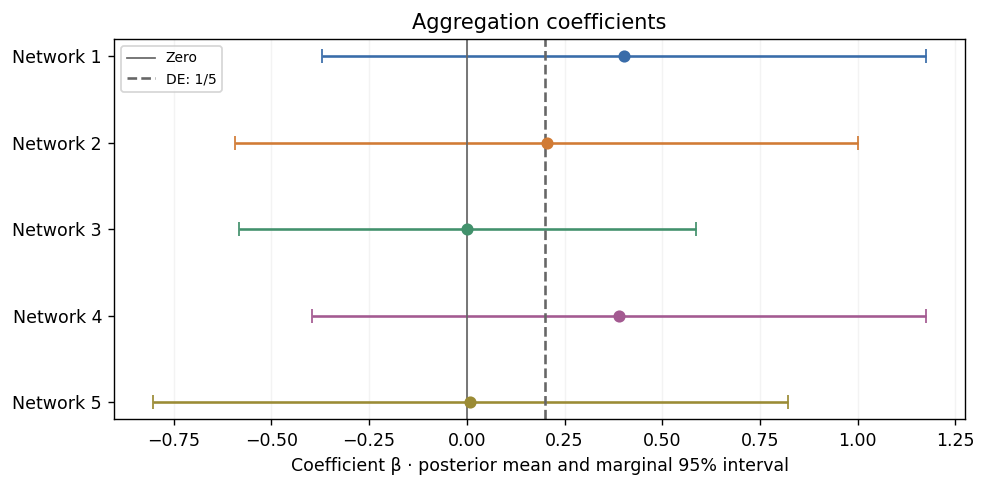
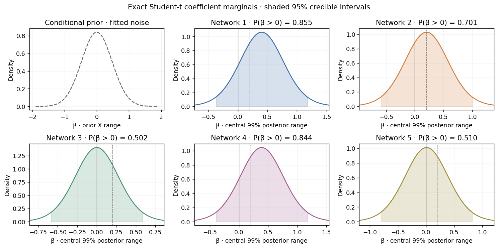

Each density panel uses its own X range for readability; coefficient intervals above share a common axis. Prior reference conditions on fitted noise. Contribution shares use held-out inputs; test targets are used only for scoring.
| Network | β mean | 95% low | 95% high | P(β > 0) | Contribution share | Test RMSE | Test NLL |
|---|---|---|---|---|---|---|---|
| 1 | 0.40229 | -0.37084 | 1.17542 | 0.85467 | 0.35791 | 3.67243 | 518.48181 |
| 2 | 0.20446 | -0.59245 | 1.00137 | 0.70079 | 0.22500 | 4.14006 | 525.64604 |
| 3 | 0.00120 | -0.58351 | 0.58591 | 0.50169 | 0.00156 | 4.57182 | 116.63683 |
| 4 | 0.38991 | -0.39517 | 1.17498 | 0.84372 | 0.40443 | 3.92271 | 432.30151 |
| 5 | 0.00942 | -0.80302 | 0.82186 | 0.50953 | 0.01111 | 4.38657 | 253.42808 |
Functional repulsion · BDKN
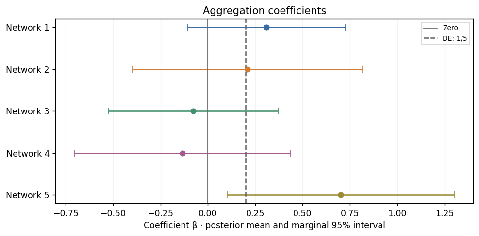
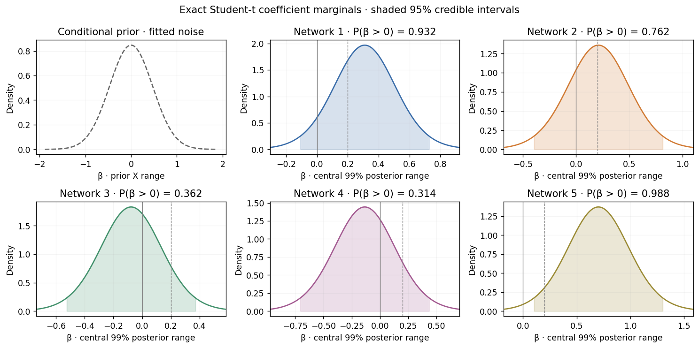
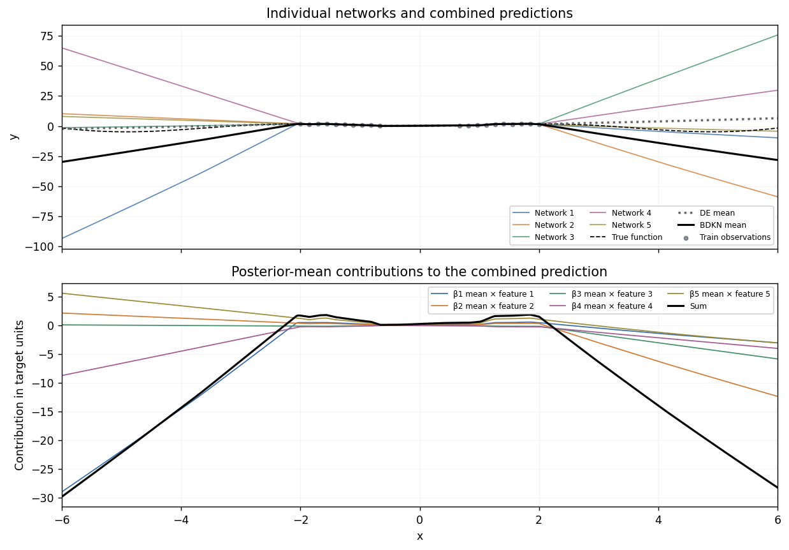
Each density panel uses its own X range for readability; coefficient intervals above share a common axis. Prior reference conditions on fitted noise. Contribution shares use held-out inputs; test targets are used only for scoring.
| Network | β mean | 95% low | 95% high | P(β > 0) | Contribution share | Test RMSE | Test NLL |
|---|---|---|---|---|---|---|---|
| 1 | 0.31012 | -0.10711 | 0.72734 | 0.93165 | 0.39550 | 28.49977 | 169355852.38410 |
| 2 | 0.21006 | -0.39360 | 0.81372 | 0.76184 | 0.20841 | 19.34133 | 92536174.40942 |
| 3 | -0.07694 | -0.52589 | 0.37201 | 0.36224 | 0.08708 | 28.11717 | 214.20958 |
| 4 | -0.13428 | -0.70365 | 0.43509 | 0.31406 | 0.17159 | 25.69154 | 318.29197 |
| 5 | 0.70215 | 0.10298 | 1.30132 | 0.98805 | 0.13743 | 4.45818 | 3656322.37081 |
Weight repulsion · BDKN
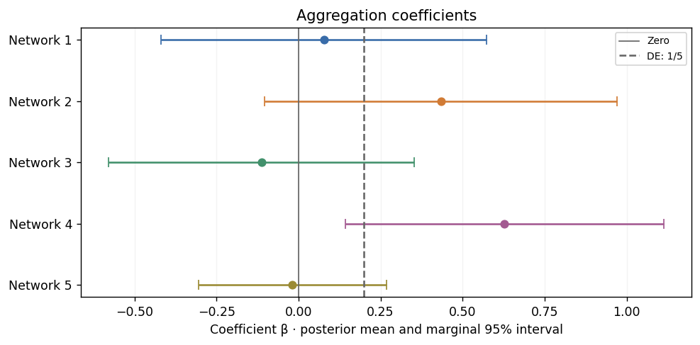
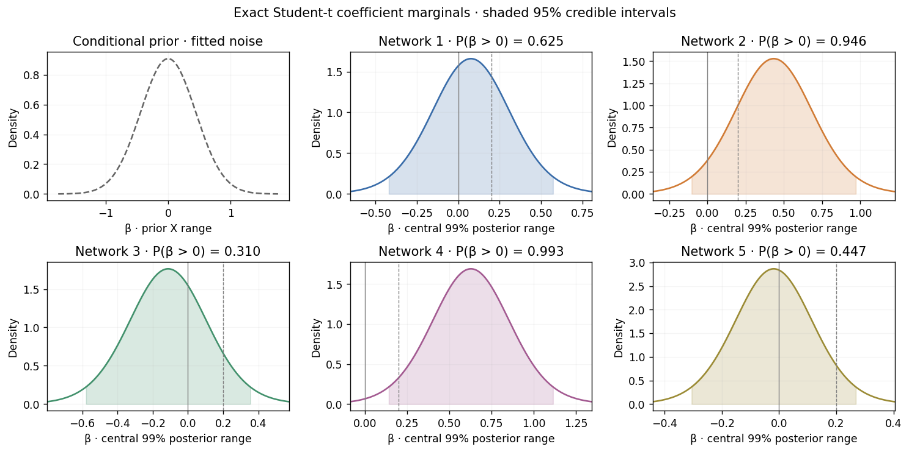
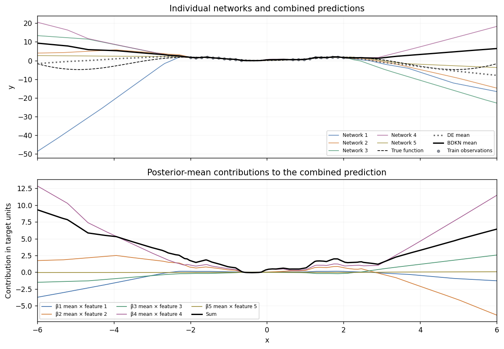
Each density panel uses its own X range for readability; coefficient intervals above share a common axis. Prior reference conditions on fitted noise. Contribution shares use held-out inputs; test targets are used only for scoring.
| Network | β mean | 95% low | 95% high | P(β > 0) | Contribution share | Test RMSE | Test NLL |
|---|---|---|---|---|---|---|---|
| 1 | 0.07683 | -0.41865 | 0.57231 | 0.62515 | 0.10425 | 13.60645 | 6019693.80622 |
| 2 | 0.43396 | -0.10367 | 0.97159 | 0.94611 | 0.23006 | 4.76844 | 2668317.81823 |
| 3 | -0.11252 | -0.57840 | 0.35336 | 0.30995 | 0.10730 | 8.82223 | 8500575.15196 |
| 4 | 0.62793 | 0.14191 | 1.11394 | 0.99304 | 0.55369 | 10.70495 | 25554864.62928 |
| 5 | -0.01867 | -0.30553 | 0.26819 | 0.44669 | 0.00471 | 2.84819 | 1560195.43109 |
First-order repulsion · BDKN
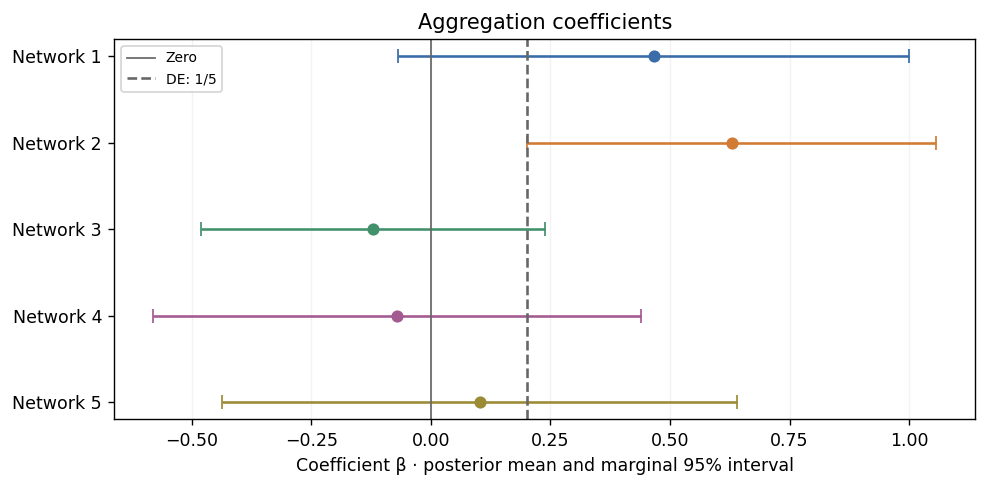
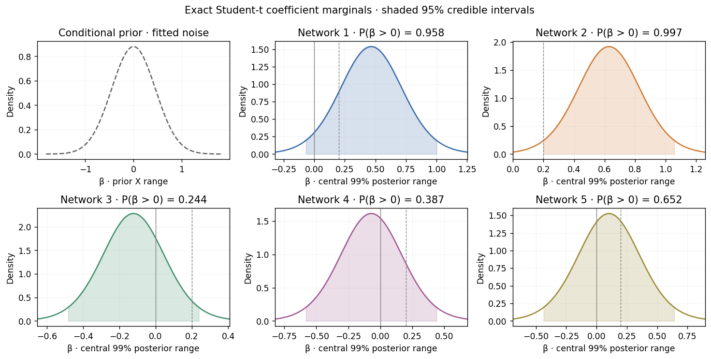
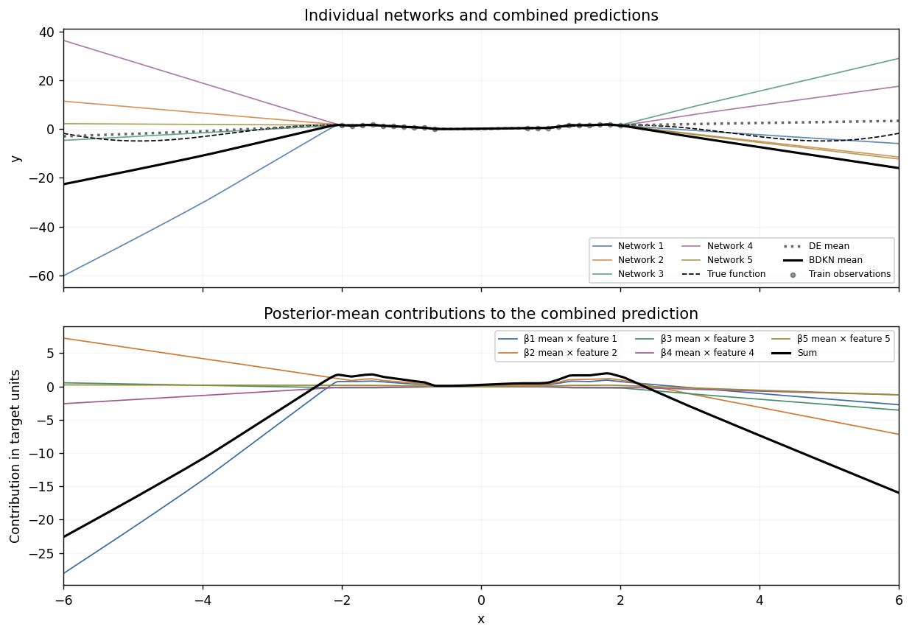
Each density panel uses its own X range for readability; coefficient intervals above share a common axis. Prior reference conditions on fitted noise. Contribution shares use held-out inputs; test targets are used only for scoring.
| Network | β mean | 95% low | 95% high | P(β > 0) | Contribution share | Test RMSE | Test NLL |
|---|---|---|---|---|---|---|---|
| 1 | 0.46594 | -0.06823 | 1.00012 | 0.95808 | 0.52179 | 17.73414 | 23317833.79846 |
| 2 | 0.62891 | 0.20113 | 1.05670 | 0.99696 | 0.28685 | 5.91182 | 8629817.47472 |
| 3 | -0.12177 | -0.48160 | 0.23805 | 0.24418 | 0.08514 | 12.08539 | 130.86079 |
| 4 | -0.07076 | -0.58003 | 0.43851 | 0.38746 | 0.07408 | 15.66700 | 37973941.25402 |
| 5 | 0.10234 | -0.43595 | 0.64063 | 0.65206 | 0.03214 | 3.53049 | 1456259.33236 |